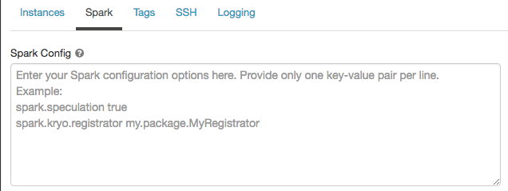
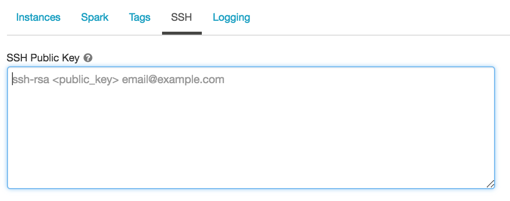

Configure clusters
Note
These are instructions for the legacy create cluster UI, and are included only for historical accuracy. All customers should be using the updated create cluster UI.
This article explains the configuration options available when you create and edit Databricks clusters. It focuses on creating and editing clusters using the UI. For other methods, see the Databricks CLI, the Clusters API, and Databricks Terraform provider.
For help deciding what combination of configuration options suits your needs best, see cluster configuration best practices.
Cluster policy
A cluster policy limits the ability to configure clusters based on a set of rules. The policy rules limit the attributes or attribute values available for cluster creation. Cluster policies have ACLs that limit their use to specific users and groups and thus limit which policies you can select when you create a cluster.
To configure a cluster policy, select the cluster policy in the Policy drop-down.
Note
If no policies have been created in the workspace, the Policy drop-down does not display.
If you have:
Cluster create permission, you can select the Unrestricted policy and create fully-configurable clusters. The Unrestricted policy does not limit any cluster attributes or attribute values.
Both cluster create permission and access to cluster policies, you can select the Unrestricted policy and the policies you have access to.
Access to cluster policies only, you can select the policies you have access to.
Cluster mode
Note
This article describes the legacy clusters UI. For information about the new clusters UI (in preview), see Create a cluster. This includes some terminology changes for cluster access types and modes. For a comparison of the new and legacy cluster types, see Clusters UI changes and cluster access modes. In the preview UI:
Standard mode clusters are now called No Isolation Shared access mode clusters.
High Concurrency with Tables ACLs are now called Shared access mode clusters.
Databricks supports three cluster modes: Standard, High Concurrency, and Single Node. The default cluster mode is Standard.
Important
If your workspace is assigned to a Unity Catalog metastore, High Concurrency clusters are not available. Instead, you use access mode to ensure the integrity of access controls and enforce strong isolation guarantees. See also Access modes.
You cannot change the cluster mode after a cluster is created. If you want a different cluster mode, you must create a new cluster.
The cluster configuration includes an auto terminate setting whose default value depends on cluster mode:
Standard and Single Node clusters terminate automatically after 120 minutes by default.
High Concurrency clusters do not terminate automatically by default.
Standard clusters
Warning
Standard mode clusters (sometimes called No Isolation Shared clusters) can be shared by multiple users, with no isolation between users. If you use the High Concurrency cluster mode without additional security settings such as Table ACLs or Credential Passthrough, the same settings are used as Standard mode clusters. Account admins can prevent internal credentials from being automatically generated for Databricks workspace admins on these types of cluster. For more secure options, Databricks recommends alternatives such as high concurrency clusters with Table ACLs.
A Standard cluster is recommended for single users only. Standard clusters can run workloads developed in Python, SQL, R, and Scala.
High Concurrency clusters
A High Concurrency cluster is a managed cloud resource. The key benefits of High Concurrency clusters are that they provide fine-grained sharing for maximum resource utilization and minimum query latencies.
High Concurrency clusters can run workloads developed in SQL, Python, and R. The performance and security of High Concurrency clusters is provided by running user code in separate processes, which is not possible in Scala.
In addition, only High Concurrency clusters support table access control.
To create a High Concurrency cluster, set Cluster Mode to High Concurrency.
Single Node clusters
A Single Node cluster has no workers and runs Spark jobs on the driver node.
In contrast, a Standard cluster requires at least one Spark worker node in addition to the driver node to execute Spark jobs.
To create a Single Node cluster, set Cluster Mode to Single Node.
To learn more about working with Single Node clusters, see Single node compute.
Pools
To reduce cluster start time, you can attach a cluster to a predefined pool of idle instances, for the driver and worker nodes. The cluster is created using instances in the pools. If a pool does not have sufficient idle resources to create the requested driver or worker nodes, the pool expands by allocating new instances from the instance provider. When an attached cluster is terminated, the instances it used are returned to the pools and can be reused by a different cluster.
If you select a pool for worker nodes but not for the driver node, the driver node inherit the pool from the worker node configuration.
Important
If you attempt to select a pool for the driver node but not for worker nodes, an error occurs and your cluster isn’t created. This requirement prevents a situation where the driver node has to wait for worker nodes to be created, or vice versa.
See Create a pool to learn more about working with pools in Databricks.
Databricks Runtime
Databricks runtimes are the set of core components that run on your clusters. All Databricks runtimes include Apache Spark and add components and updates that improve usability, performance, and security. For details, see Databricks Runtime release notes versions and compatibility.
Databricks offers several types of runtimes and several versions of those runtime types in the Databricks Runtime Version drop-down when you create or edit a cluster.
Photon acceleration
Photon is available for clusters running Databricks Runtime 9.1 LTS and above.
To enable Photon acceleration, select the Use Photon Acceleration checkbox.
If desired, you can specify the instance type in the Worker Type and Driver Type drop-down.
You can view Photon activity in the Spark UI. The following screenshot shows the query details DAG. There are two indications of Photon in the DAG. First, Photon operators start with “Photon”, for example, PhotonGroupingAgg. Second, in the DAG, Photon operators and stages are colored peach, while the non-Photon ones are blue.
Docker images
For some Databricks Runtime versions, you can specify a Docker image when you create a cluster. Example use cases include library customization, a golden container environment that doesn’t change, and Docker CI/CD integration.
You can also use Docker images to create custom deep learning environments on clusters with GPU devices.
For instructions, see Customize containers with Databricks Container Service and Databricks Container Services on GPU clusters.
Cluster node type
A cluster consists of one driver node and zero or more worker nodes.
You can pick separate cloud provider instance types for the driver and worker nodes, although by default the driver node uses the same instance type as the worker node. Different families of instance types fit different use cases, such as memory-intensive or compute-intensive workloads.
Driver node
The driver node maintains state information of all notebooks attached to the cluster. The driver node also maintains the SparkContext and interprets all the commands you run from a notebook or a library on the cluster, and runs the Apache Spark master that coordinates with the Spark executors.
The default value of the driver node type is the same as the worker node type. You can choose a larger driver node type with more memory if you are planning to collect() a lot of data from Spark workers and analyze them in the notebook.
Tip
Since the driver node maintains all of the state information of the notebooks attached, make sure to detach unused notebooks from the driver node.
Worker node
Databricks worker nodes run the Spark executors and other services required for the proper functioning of the clusters. When you distribute your workload with Spark, all of the distributed processing happens on worker nodes. Databricks runs one executor per worker node; therefore the terms executor and worker are used interchangeably in the context of the Databricks architecture.
Tip
To run a Spark job, you need at least one worker node. If a cluster has zero workers, you can run non-Spark commands on the driver node, but Spark commands will fail.
Note
Databricks launches worker nodes with two private IP addresses each. The node’s primary private IP address is used to host Databricks internal traffic. The secondary private IP address is used by the Spark container for intra-cluster communication. This model allows Databricks to provide isolation between multiple clusters in the same workspace.
GPU instance types
For computationally challenging tasks that demand high performance, like those associated with deep learning, Databricks supports clusters accelerated with graphics processing units (GPUs). For more information, see GPU-enabled clusters.
AWS Graviton instance types
Databricks supports clusters with AWS Graviton processors. Arm-based AWS Graviton instances are designed by AWS to deliver better price performance over comparable current generation x86-based instances. See AWS Graviton-enabled clusters.
Cluster size and autoscaling
When you create a Databricks cluster, you can either provide a fixed number of workers for the cluster or provide a minimum and maximum number of workers for the cluster.
When you provide a fixed size cluster, Databricks ensures that your cluster has the specified number of workers. When you provide a range for the number of workers, Databricks chooses the appropriate number of workers required to run your job. This is referred to as autoscaling.
With autoscaling, Databricks dynamically reallocates workers to account for the characteristics of your job. Certain parts of your pipeline may be more computationally demanding than others, and Databricks automatically adds additional workers during these phases of your job (and removes them when they’re no longer needed).
Autoscaling makes it easier to achieve high cluster utilization, because you don’t need to provision the cluster to match a workload. This applies especially to workloads whose requirements change over time (like exploring a dataset during the course of a day), but it can also apply to a one-time shorter workload whose provisioning requirements are unknown. Autoscaling thus offers two advantages:
Workloads can run faster compared to a constant-sized under-provisioned cluster.
Autoscaling clusters can reduce overall costs compared to a statically-sized cluster.
Depending on the constant size of the cluster and the workload, autoscaling gives you one or both of these benefits at the same time. The cluster size can go below the minimum number of workers selected when the cloud provider terminates instances. In this case, Databricks continuously retries to re-provision instances in order to maintain the minimum number of workers.
Note
Autoscaling is not available for spark-submit jobs.
How autoscaling behaves
Scales up from min to max in 2 steps.
Can scale down even if the cluster is not idle by looking at shuffle file state.
Scales down based on a percentage of current nodes.
On job clusters, scales down if the cluster is underutilized over the last 40 seconds.
On all-purpose clusters, scales down if the cluster is underutilized over the last 150 seconds.
The
spark.databricks.aggressiveWindowDownSSpark configuration property specifies in seconds how often a cluster makes down-scaling decisions. Increasing the value causes a cluster to scale down more slowly. The maximum value is 600.
Enable and configure autoscaling
To allow Databricks to resize your cluster automatically, you enable autoscaling for the cluster and provide the min and max range of workers.
Enable autoscaling.
All-Purpose cluster - On the Create Cluster page, select the Enable autoscaling checkbox in the Autopilot Options box:
Job cluster - On the Configure Cluster page, select the Enable autoscaling checkbox in the Autopilot Options box:
Configure the min and max workers.

When the cluster is running, the cluster detail page displays the number of allocated workers. You can compare number of allocated workers with the worker configuration and make adjustments as needed.
Important
If you are using an instance pool:
Make sure the cluster size requested is less than or equal to the minimum number of idle instances in the pool. If it is larger, cluster startup time will be equivalent to a cluster that doesn’t use a pool.
Make sure the maximum cluster size is less than or equal to the maximum capacity of the pool. If it is larger, the cluster creation will fail.
Autoscaling example
If you reconfigure a static cluster to be an autoscaling cluster, Databricks immediately resizes the cluster within the minimum and maximum bounds and then starts autoscaling. As an example, the following table demonstrates what happens to clusters with a certain initial size if you reconfigure a cluster to autoscale between 5 and 10 nodes.
Initial size |
Size after reconfiguration |
|---|---|
6 |
6 |
12 |
10 |
3 |
5 |
Local disk encryption
Preview
This feature is in Public Preview.
Some instance types you use to run clusters may have locally attached disks. Databricks may store shuffle data or ephemeral data on these locally attached disks. To ensure that all data at rest is encrypted for all storage types, including shuffle data that is stored temporarily on your cluster’s local disks, you can enable local disk encryption.
Important
Your workloads may run more slowly because of the performance impact of reading and writing encrypted data to and from local volumes.
When local disk encryption is enabled, Databricks generates an encryption key locally that is unique to each cluster node and is used to encrypt all data stored on local disks. The scope of the key is local to each cluster node and is destroyed along with the cluster node itself. During its lifetime, the key resides in memory for encryption and decryption and is stored encrypted on the disk.
To enable local disk encryption, you must use the Clusters API. During cluster creation or edit, set:
{
"enable_local_disk_encryption": true
}
See the Clusters API for examples of how to invoke these APIs.
Here is an example of a cluster create call that enables local disk encryption:
{
"cluster_name": "my-cluster",
"spark_version": "7.3.x-scala2.12",
"node_type_id": "r3.xlarge",
"enable_local_disk_encryption": true,
"spark_conf": {
"spark.speculation": true
},
"num_workers": 25
}
Security mode
If your workspace is assigned to a Unity Catalog metastore, you use security mode instead of High Concurrency cluster mode to ensure the integrity of access controls and enforce strong isolation guarantees. High Concurrency cluster mode is not available with Unity Catalog.
Under Advanced options, select from the following cluster security modes:
None: No isolation. Does not enforce workspace-local table access control or credential passthrough. Cannot access Unity Catalog data.
Single User: Can be used only by a single user (by default, the user who created the cluster). Other users cannot attach to the cluster. When accessing a view from a cluster with Single User security mode, the view is executed with the user’s permissions. Single-user clusters support workloads using Python, Scala, and R. Init scripts, library installation, and DBFS mounts are supported on single-user clusters. Automated jobs should use single-user clusters.
User Isolation: Can be shared by multiple users. Only SQL workloads are supported. Library installation, init scripts, and DBFS mounts are disabled to enforce strict isolation among the cluster users.
Table ACL only (Legacy): Enforces workspace-local table access control, but cannot access Unity Catalog data.
Passthrough only (Legacy): Enforces workspace-local credential passthrough, but cannot access Unity Catalog data.
The only security modes supported for Unity Catalog workloads are Single User and User Isolation.
For more information, see Access modes.
AWS configurations
When you configure a cluster’s AWS instances you can choose the availability zone, the max spot price, EBS volume type and size, and instance profiles. To specify configurations,
On the cluster configuration page, click the Advanced Options toggle.
At the bottom of the page, click the Instances tab.
Availability zones
This setting lets you specify which availability zone (AZ) you want the cluster to use. By default, this setting is set to auto (Auto-AZ), where the AZ is automatically selected based on available IPs in the workspace subnets. Auto-AZ retries in other availability zones if AWS returns insufficient capacity errors.
Choosing a specific AZ for a cluster is useful primarily if your organization has purchased reserved instances in specific availability zones. Read more about AWS availability zones.
Spot instances
You can specify whether to use spot instances and the max spot price to use when launching spot instances as a percentage of the corresponding on-demand price. By default, the max price is 100% of the on-demand price. See AWS spot pricing.
EBS volumes
This section describes the default EBS volume settings for worker nodes, how to add shuffle volumes, and how to configure a cluster so that Databricks automatically allocates EBS volumes.
To configure EBS volumes, click the Instances tab in the cluster configuration and select an option in the EBS Volume Type drop-down list.
Default EBS volumes
Databricks provisions EBS volumes for every worker node as follows:
A 30 GB encrypted EBS instance root volume used only by the host operating system and Databricks internal services.
A 150 GB encrypted EBS container root volume used by the Spark worker. This hosts Spark services and logs.
(HIPAA only) a 75 GB encrypted EBS worker log volume that stores logs for Databricks internal services.
Add EBS shuffle volumes
To add shuffle volumes, select General Purpose SSD in the EBS Volume Type drop-down list:
By default, Spark shuffle outputs go to the instance local disk. For instance types that do not have a local disk, or if you want to increase your Spark shuffle storage space, you can specify additional EBS volumes. This is particularly useful to prevent out of disk space errors when you run Spark jobs that produce large shuffle outputs.
Databricks encrypts these EBS volumes for both on-demand and spot instances. Read more about AWS EBS volumes.
Optionally encrypt Databricks EBS volumes with a customer-managed key
You can optionally encrypt cluster EBS volumes with a customer-managed key.
AWS EBS limits
Ensure that your AWS EBS limits are high enough to satisfy the runtime requirements for all workers in all clusters. For information on the default EBS limits and how to change them, see Amazon Elastic Block Store (EBS) Limits.
AWS EBS SSD volume type
You can select either gp2 or gp3 for your AWS EBS SSD volume type. To do this, see Manage SSD storage. Databricks recommends you switch to gp3 for its cost savings compared to gp2. For technical information about gp2 and gp3, see Amazon EBS volume types.
Autoscaling local storage
If you don’t want to allocate a fixed number of EBS volumes at cluster creation time, use autoscaling local storage. With autoscaling local storage, Databricks monitors the amount of free disk space available on your cluster’s Spark workers. If a worker begins to run too low on disk, Databricks automatically attaches a new EBS volume to the worker before it runs out of disk space. EBS volumes are attached up to a limit of 5 TB of total disk space per instance (including the instance’s local storage).
To configure autoscaling storage, select Enable autoscaling local storage in the Autopilot Options box:
The EBS volumes attached to an instance are detached only when the instance is returned to AWS. That is, EBS volumes are never detached from an instance as long as it is part of a running cluster. To scale down EBS usage, Databricks recommends using this feature in a cluster configured with Cluster size and autoscaling or Unexpected termination.
Note
Databricks uses Throughput Optimized HDD (st1) to extend the local storage of an instance. The default AWS capacity limit for these volumes is 20 TiB. To avoid hitting this limit, administrators should request an increase in this limit based on their usage requirements.
Note
If you created your Databricks account prior to version 2.44 (before Apr 27, 2017) and want to use autoscaling local storage (enabled by default in High Concurrency clusters), you must add volume permissions to the IAM role or keys used to create your account. In particular, you must add the permissions ec2:AttachVolume, ec2:CreateVolume, ec2:DeleteVolume, and ec2:DescribeVolumes. For the complete list of permissions and instructions on how to update your existing IAM role or keys, see Create an IAM role for workspace deployment.
Instance profiles
To securely access AWS resources without using AWS keys, you can launch Databricks clusters with instance profiles. See Tutorial: Configure S3 access with an instance profile for information about how to create and configure instance profiles. Once you have created an instance profile, you select it in the Instance Profile drop-down list:

Note
Once a cluster launches with an instance profile, anyone who has attach permissions to this cluster can access the underlying resources controlled by this role. To guard against unwanted access, you can use Cluster access control to restrict permissions to the cluster.
Spark configuration
To fine tune Spark jobs, you can provide custom Spark configuration properties in a cluster configuration.
On the cluster configuration page, click the Advanced Options toggle.
Click the Spark tab.
In Spark config, enter the configuration properties as one key-value pair per line.
When you configure a cluster using the Cluster API, set Spark properties in the spark_conf field in the Create new cluster API or Update cluster configuration API.
Databricks does not recommend using global init scripts.
To set Spark properties for all clusters, create a global init script:
dbutils.fs.put("dbfs:/databricks/init/set_spark_params.sh","""
|#!/bin/bash
|
|cat << 'EOF' > /databricks/driver/conf/00-custom-spark-driver-defaults.conf
|[driver] {
| "spark.sql.sources.partitionOverwriteMode" = "DYNAMIC"
|}
|EOF
""".stripMargin, true)
Retrieve a Spark configuration property from a secret
Databricks recommends storing sensitive information, such as passwords, in a secret instead of plaintext. To reference a secret in the Spark configuration, use the following syntax:
spark.<property-name> {{secrets/<scope-name>/<secret-name>}}
For example, to set a Spark configuration property called password to the value of the secret stored in secrets/acme_app/password:
spark.password {{secrets/acme-app/password}}
For more information, see Syntax for referencing secrets in a Spark configuration property or environment variable.
Environment variables
You can configure custom environment variables that you can access from init scripts running on a cluster. Databricks also provides predefined environment variables that you can use in init scripts. You cannot override these predefined environment variables.
On the cluster configuration page, click the Advanced Options toggle.
Click the Spark tab.
Set the environment variables in the Environment Variables field.

You can also set environment variables using the spark_env_vars field in the Create new cluster API or Update cluster configuration API.
Cluster tags
Cluster tags allow you to easily monitor the cost of cloud resources used by various groups in your organization. You can specify tags as key-value pairs when you create a cluster, and Databricks applies these tags to cloud resources like VMs and disk volumes, as well as DBU usage reports.
For clusters launched from pools, the custom cluster tags are only applied to DBU usage reports and do not propagate to cloud resources.
For detailed information about how pool and cluster tag types work together, see Monitor usage using cluster, pool, and workspace tags.
For convenience, Databricks applies four default tags to each cluster: Vendor, Creator, ClusterName, and ClusterId.
In addition, on job clusters, Databricks applies two default tags: RunName and JobId.
On resources used by Databricks SQL, Databricks also applies the default tag SqlWarehouseId.
Warning
Do not assign a custom tag with the key Name to a cluster. Every cluster has a tag Name whose value is set by Databricks. If you change the value associated with the key Name, the cluster can no longer be tracked by Databricks. As a consequence, the cluster might not be terminated after becoming idle and will continue to incur usage costs.
You can add custom tags when you create a cluster. To configure cluster tags:
On the cluster configuration page, click the Advanced Options toggle.
At the bottom of the page, click the Tags tab.
Add a key-value pair for each custom tag. You can add up to 45 custom tags.
Enforce mandatory tags
To ensure that certain tags are always populated when clusters are created, you can apply a specific IAM policy to your account’s primary IAM role (the one created during account setup; contact your AWS administrator if you need access). The IAM policy should include explicit Deny statements for mandatory tag keys and optional values. Cluster creation will fail if required tags with one of the allowed values aren’t provided.
For example, if you want to enforce Department and Project tags, with only specified values allowed for the former and a free-form non-empty value for the latter, you could apply an IAM policy like this one:
{
"Version": "2012-10-17",
"Statement": [
{
"Sid": "MandateLaunchWithTag1",
"Effect": "Deny",
"Action": [
"ec2:RunInstances",
"ec2:CreateTags"
],
"Resource": "arn:aws:ec2:region:accountId:instance/*",
"Condition": {
"StringNotEqualsIgnoreCase": {
"aws:RequestTag/Department": [
"Deptt1", "Deptt2", "Deptt3"
]
}
}
},
{
"Sid": "MandateLaunchWithTag2",
"Effect": "Deny",
"Action": [
"ec2:RunInstances",
"ec2:CreateTags"
],
"Resource": "arn:aws:ec2:region:accountId:instance/*",
"Condition": {
"StringNotLike": {
"aws:RequestTag/Project": "?*"
}
}
}
]
}
Both ec2:RunInstances and ec2:CreateTags actions are required for each tag for effective coverage of scenarios in which there are clusters that have only on-demand instances, only spot instances, or both.
Tip
Databricks recommends that you add a separate policy statement for each tag. The overall policy might become long, but it is easier to debug. See the IAM Policy Condition Operators Reference for a list of operators that can be used in a policy.
Note
Cluster creation errors due to an IAM policy show an encoded error message, starting with:
Cloud Provider Launch Failure: A cloud provider error was encountered while setting up the cluster.
The message is encoded because the details of the authorization status can constitute privileged information that the user who requested the action should not see. See DecodeAuthorizationMessage API (or CLI) for information about how to decode such messages.
SSH access to clusters
Note
You cannot use SSH to log into a cluster that has secure cluster connectivity enabled.
SSH allows you to log into Apache Spark clusters remotely for advanced troubleshooting and installing custom software.
For a related feature, see Web terminal.
This section describes how to configure your AWS account to enable ingress access to your cluster with your public key, and how to open an SSH connection to cluster nodes.
Configure security group
You must update the Databricks security group in your AWS account to give ingress access to the IP address from which you will initiate the SSH connection. You can set this for a single IP address or provide a range that represents your entire office IP range.
In your AWS console, find the Databricks security group. It will have a label similar to
<databricks-instance>-worker-unmanaged. (Example:dbc-fb3asdddd3-worker-unmanaged)Edit the security group and add an inbound TCP rule to allow port
2200to worker machines. It can be a single IP address or a range.Make sure that your computer and office allow you to send TCP traffic on port
2200.
Generate SSH key pair
Create an SSH key pair by running this command in a terminal session:
ssh-keygen -t rsa -b 4096 -C "email@example.com"
You must provide the path to the directory where you want to save the public and private key. The public key is saved with the extension .pub.
Configure a new cluster with your public key
Copy the entire contents of the public key file.
On the cluster configuration page, click the Advanced Options toggle.
At the bottom of the page, click the SSH tab.
Paste the key you copied into the SSH Public Key field.

Configure an existing cluster with your public key
If you have a cluster and didn’t provide the public key during cluster creation, you can inject the public key by running this code from any notebook attached to the cluster:
val publicKey = " put your public key here "
def addAuthorizedPublicKey(key: String): Unit = {
val fw = new java.io.FileWriter("/home/ubuntu/.ssh/authorized_keys", /* append */ true)
fw.write("\n" + key)
fw.close()
}
val numExecutors = sc.getExecutorMemoryStatus.keys.size
sc.parallelize(0 until numExecutors, numExecutors).foreach { i =>
addAuthorizedPublicKey(publicKey)
}
addAuthorizedPublicKey(publicKey)
Cluster log delivery
When you create a cluster, you can specify a location to deliver the logs for the Spark driver node, worker nodes, and events. Logs are delivered every five minutes to your chosen destination. When a cluster is terminated, Databricks guarantees to deliver all logs generated up until the cluster was terminated.
The destination of the logs depends on the cluster ID. If the specified destination is
dbfs:/cluster-log-delivery, cluster logs for 0630-191345-leap375 are delivered to
dbfs:/cluster-log-delivery/0630-191345-leap375.
To configure the log delivery location:
On the cluster configuration page, click the Advanced Options toggle.
Click the Logging tab.
Select a destination type.
Enter the cluster log path.
S3 bucket destinations
If you choose an S3 destination, you must configure the cluster with an instance profile that can access the bucket.
This instance profile must have both the PutObject and PutObjectAcl permissions. An example instance profile
has been included for your convenience. See Tutorial: Configure S3 access with an instance profile for instructions on how to set up an instance profile.
{
"Version": "2012-10-17",
"Statement": [
{
"Effect": "Allow",
"Action": [
"s3:ListBucket"
],
"Resource": [
"arn:aws:s3:::<my-s3-bucket>"
]
},
{
"Effect": "Allow",
"Action": [
"s3:PutObject",
"s3:PutObjectAcl",
"s3:GetObject",
"s3:DeleteObject"
],
"Resource": [
"arn:aws:s3:::<my-s3-bucket>/*"
]
}
]
}
Note
This feature is also available in the REST API. See the Clusters API.
Init scripts
A cluster node initialization—or init—script is a shell script that runs during startup for each cluster node before the Spark driver or worker JVM starts. You can use init scripts to install packages and libraries not included in the Databricks runtime, modify the JVM system classpath, set system properties and environment variables used by the JVM, or modify Spark configuration parameters, among other configuration tasks.
You can attach init scripts to a cluster by expanding the Advanced Options section and clicking the Init Scripts tab.
For detailed instructions, see What are init scripts?.